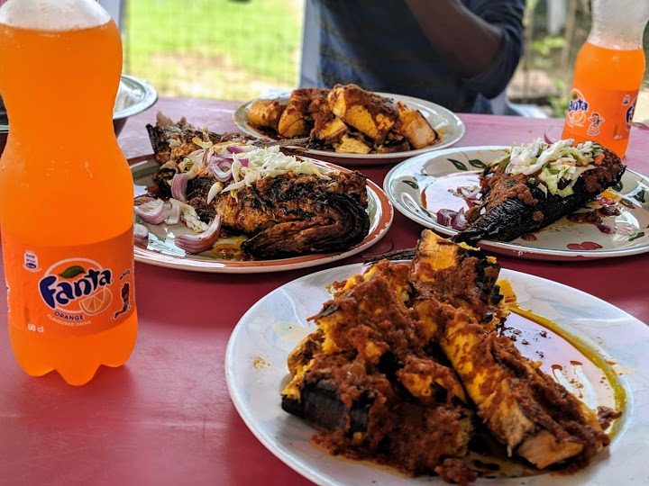
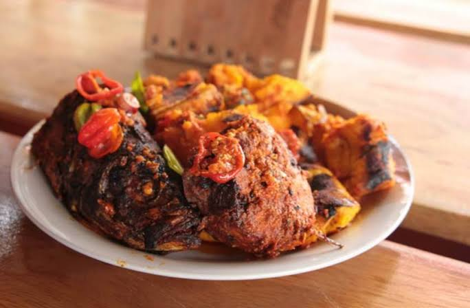
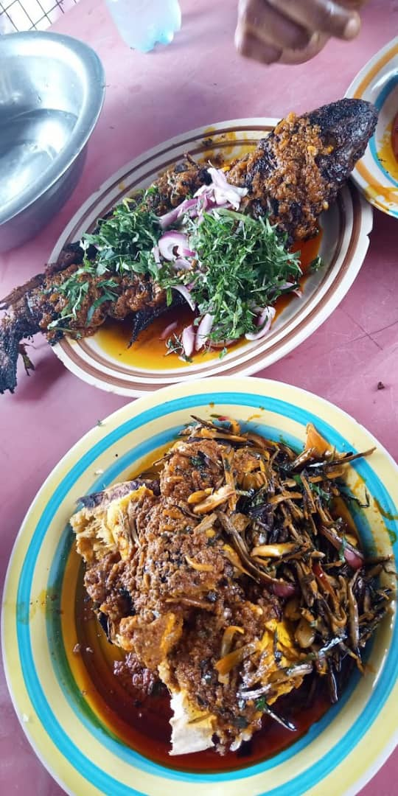

Chioma bole & fish special
  A trek to Port Harcourt isn't done without a quintessence of bole and fish. There's no favored place to get this over at chioma bole and fish special. One of Port Harcourt's best start up diners, chioma bole and fish special has taken the roadside delicacy of stewed plantain from its typically unhygienic condition to an elegant and also befitting conditions without losing any of its tastiness.